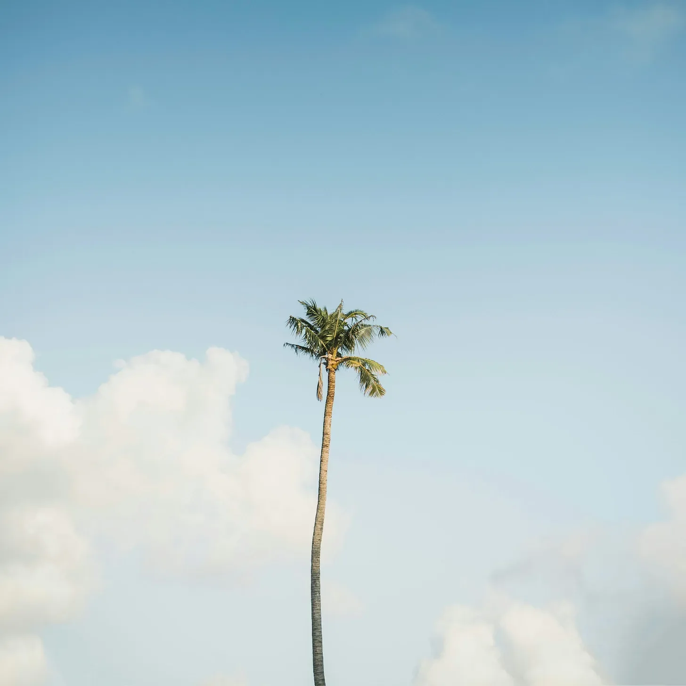

사람들은 그것을 과부의 야자수라고 불렀지만, 어떤 과부인지, 왜 그렇게 불렸는지는 아무도 기억하지 못했다. 파란 하늘을 배경으로, 그 고독한 나무줄기는 마치 해시계의 그림자처럼 솟아올라 디지털 세상이 잊어버린 방식으로 시간을 표시했다.
[They called it the Widow’s Palm, though no one remembered which widow or why. Against the powder-blue sky, its solitary trunk rose like a sundial’s shadow, marking time in ways the digital world had forgotten.]
그 꼭대기의 야자수 잎들은 구름들에게 소금기 묻은 수십 년의 이야기를 속삭였지만, 그 구름들은 결말을 듣기에는 너무 빨리 지나갔다.
[The fronds at its crown whispered tales of salt-sprayed decades to clouds that never lingered long enough to learn the ending.]
마코의 비치 바의 노인들은 그것이 1962년에 연애편지와 함께 묻힌 코코넛에서 자라났다고 주장했다. 다른 이들은 초대 시장의 부인이 무언가의 증거로 심었다고 맹세했는데 - 이야기하는 사람에 따라 그것은 슬픔이었다가, 희망이었다가, 또는 악의였다.
[Old-timers at Mako’s Beach Bar claimed it sprouted from a coconut buried with love letters in 1962. Others swore it was planted by the first mayor’s wife as a testament to something—grief, hope, or spite, depending on who told the story.]
우리의 작은 해안 도시의 많은 것들처럼, 진실은 계절이 지나가는 파도 속에 녹아들어, 추측이라는 잔여물만을 남겨두었다.
[The truth, like so many things in our little coastal town, had dissolved in the surf of passing seasons, leaving behind only the residue of speculation.]
건설 인부들이 이제 그 주위를 에워쌌고, 그들의 노란 기계들은 원래 해안선의 이 마지막 파수꾼을 둘러싸고 포식자처럼 웅크리고 있었다.
[The construction crews circled it now, their yellow machines crouching like predators around this last sentinel of the original shoreline.]
그들은 이것을 발전이라 불렀지만, 그 발전이란 게 또 하나의 호화로운 리조트처럼 의심스럽게 보였다. 매일 오후면 야자수의 그림자가 그들의 청사진 위로 드리웠고, 그들의 콘크리트 꿈이 형태를 갖추기 전에 무엇이 있었는지를 조용히 상기시켜 주었다.
[Progress, they called it, though progress looked suspiciously like another luxury resort. The palm’s shadow fell across their blueprints every afternoon, a gentle reminder of what stood before their concrete dreams took shape.]
하지만 그들이 전기톱과 허가서를 들고 온 그 아침, 이상한 일이 일어났다.
[But on the morning they came with their chainsaws and permits, something peculiar happened.]
하얀 따오기 무리가 그 잎사귀에 자리를 잡았고, 그들의 몸은 살아있는 왕관을 만들어냈다. 아래에서는 지역 역사 협회의 노년 여성들이 나무 둘레에 팔을 맞잡고 서 있었으며, 그들의 은빛 머리카락이 아침 햇살을 받아 반짝였다.
[A flock of white ibises settled in its fronds, their bodies forming a living crown. Below, a group of elderly women from the local historical society linked arms around its trunk, their silver hair catching the morning light.]
그들은 이 나무를 심었을지도 모르는 그 과부와는 전혀 닮지 않았지만, 그들의 조용한 저항 속에서 그들은 그 과부가 되었다 - 그들 모두가, 함께, 그들의 낙원의 마지막 조각을 지키며 지켜보고 있었다.
[They looked nothing like the widow who may or may not have planted it, but in their quiet defiance, they became her—all of them, together, keeping watch over this last piece of their paradise.]